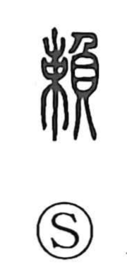

賴

Kun: tanomu, tanomoshii, tayoru | On: rai
to rely on ・ to trust ・ to request ・ to ask ・ reliable ・ trustworthy
Explanation
A phono-semantic character: the 貝 component points to wealth, while the phonetic element signals the on-yomi rai and carries the sense of distinguished merit (koretsu). The Shuowen glosses it as “to be in surplus,” evoking profit left over. Joined with 貝, the graph suggests merit that yields wealth, and from this arises the lived meanings of asking or appealing to another, relying on and trusting them, and by extension the quality of being reliable.